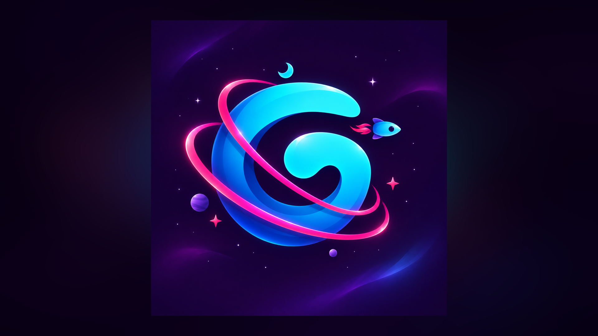

chebuBrowser
Встроенный браузер с вкладками и адресной строкой.
Знакомься с chebuOS — космической графической средой для Windows. Браузер, приложения, игры и персонализация в одном месте.
Работает как приложение внутри Windows · Пока не самостоятельная ОС

Создавай свой цифровой мир с собственными приложениями и настройками.
Встроенный браузер с вкладками и адресной строкой.
Находи приложения и запускай их в пару нажатий.
Размещай открытые приложения рядом на рабочем столе.
Собери ярлыки любимых игр в собственной библиотеке.
Меняй обои, цвет интерфейса и иконки.
Разделяй окна chebuOS по разным пространствам.
Блокнот, рисование, калькулятор, видео и многое другое.
Создавай резервные копии настроек chebuOS.
Иллюстрация оформления. Настоящий интерфейс может отличаться.
Открой каталог приложений, изучи обновления и поделись своими идеями.
Скачай проект, распакуй архив и запусти START.bat на Windows. При первом запуске понадобятся Python и интернет для установки библиотек.
Сейчас это графическая оболочка, которая запускается внутри Windows. Мы рассматриваем будущую самостоятельную версию на базе Linux.
Скачай ZIP, распакуй его, установи Python, если его ещё нет, и дважды нажми START.bat. При первом запуске потребуется интернет для установки зависимостей.
Да. В chebuOS можно добавлять ярлыки установленных игр Windows через приложение «Мои игры».
Да. Выбирай готовые обои или загружай собственную картинку из настроек и галереи.